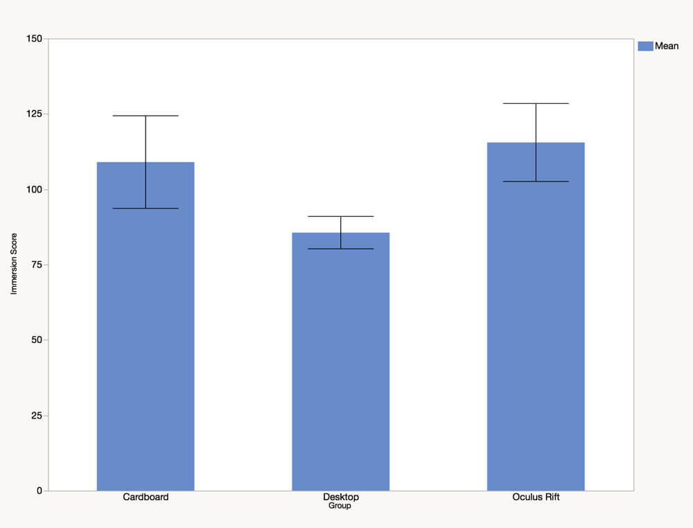
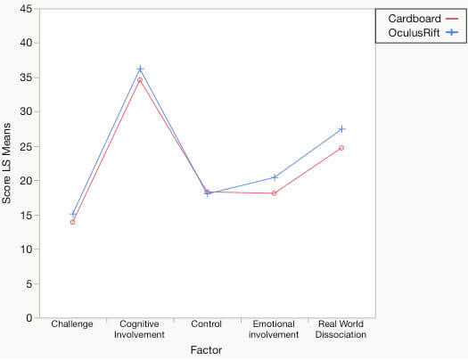

Academic Research, User Research, Virtual Reality, Cardboard, Oculus Rift, Immersion
I conducted a study with 30 healthy adult participants to compare the immersive experiences between Mobile VR and a Traditional Head-mounted display. We used Cardboard VR with a smartphone for the Mobile VR group and, Oculus Rift DK2 as a traditional HMD. The participants played Cryoblast [1], a VR game for pain management, on Cardboard, Oculus Rift and Desktop (control). Jennett’s Immersive Experience Questionnaire (IEQ) [2] was used to take the responses after playing the game. The study was a between-subjects comparison of immersion across three platforms—Cardboard VR, Oculus Rift, and a Desktop.
Immersion in the different displays was analyzed using one-way between-subjects ANOVA. The analysis revealed a significant effect of immersion for the three different displays at p<0.05 [F(2, 27)=8.7824, p=0.0012].

Post hoc analysis using the Tukey-Kramer HSD indicated the mean scores for the Oculus Rift (M = 115.5, SD = 18.08) and the Cardboard VR (M = 109, SD = 21.48) were significantly different than that of the Desktop display (M = 85.6, SD = 7.51). However, the Cardboard VR did not significantly differ from the Oculus Rift (p = 0.6658) in this study. Which means, the Cardboard VR, despite having the smallest display screen, was capable of providing a significant immersive experience for the participants compared to the high-end Oculus Rift DK2.

Jennett's IEQ measures five underlying factors of immersion–challenge, control, real world dissociation, emotional involvement and cognitive involvement. We analyzed the data further to better understand the effects of these five factors for Oculus Rift and Cardboard VR. For this analysis, there is one independent variable (Display Type–Oculus Rift, Cardboard, Desktop) and five dependent variables (challenge, control, real world dissociation, emotional involvement and cognitive involvement). A one-way MANOVA was performed on the dataset in SPSS. The analysis revealed that there were significant effects of the five factors among the three displays, F(5,23) = 313.604, p<0.05, Wilk’s Lambda= 0.014.